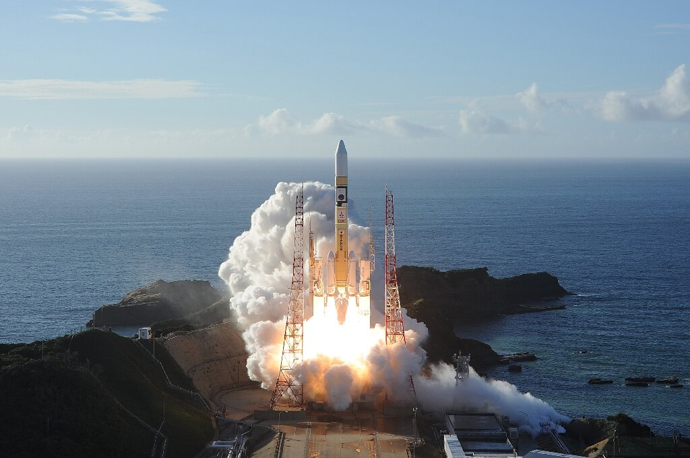
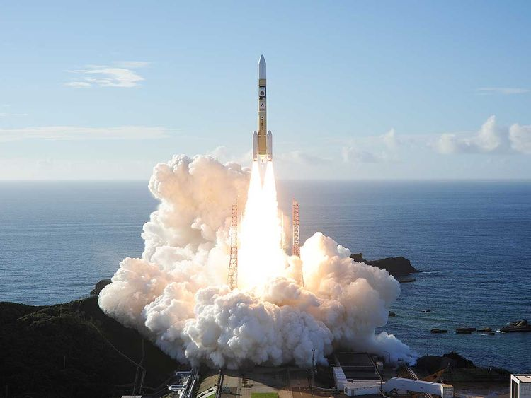
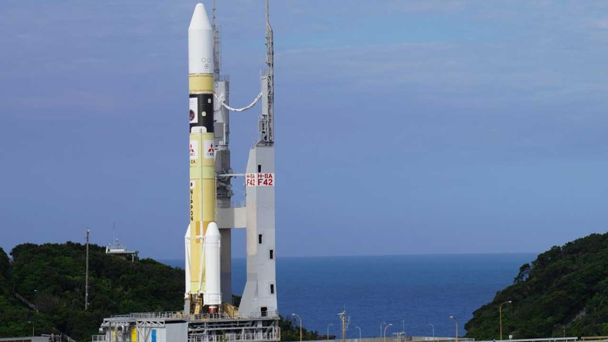
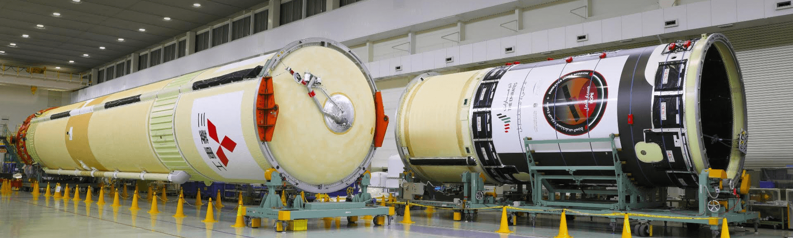

  
The Hope Probe will be launched into space from the Tanegashima Space Centre in Japan aboard an H2A202 rocket, which is part of the H-IIA launch vehicle family. The H-IIA Launch Vehicle is a high-performance rocket developed and operated by Mitsubishi Heavy Industries. Mitsubishi Heavy Industries provides all the services related to the spacecraft launch including launch vehicle manufacturing, interface coordination, and launch operations at the Tanegashima Space Centre. The Japan Aerospace Exploration Agency (JAXA) takes care of flight safety, range safety and launch site facility. The launch vehicle consists of a first stage, second stage, fairing, and a pair of Solid Rocket Boosters (SRB-As). The propulsion system of the launch vehicle uses liquid hydrogen and liquid oxygen.

The first stage of the H-IIA rocket system is made up of a high-performance LE-7A engine, an engine section, a propulsion system tank charged with liquid hydrogen and liquid oxygen, a centre section connecting the tanks, and an inter-stage section connecting the first and second stages.